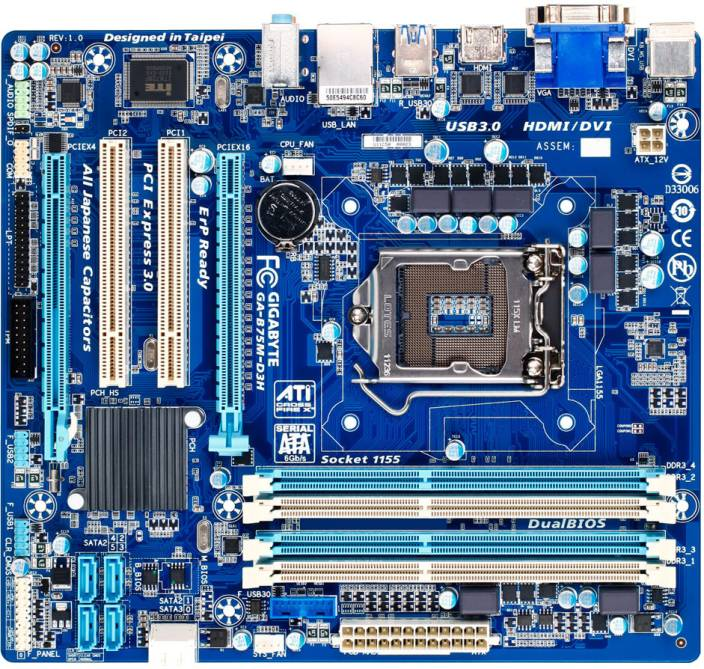

Algorithme et programmation
Cours 2
Benoit Simard
Pré-Histoire
2500 AV JV
Le boulier
1645 - Processeur
Invention de la pascaline par Pascal
le permettait d’additionner et de soustraire deux nombres d’une façon directe et de faire des multiplications et des divisions par répétitions.
1725 - mémoire & programme
Bouchon invente le ruban perforé pour le métier à tisser
1802
La carte perforé

1822 - Concept ordinateur
Projet de machine analytique par Babbage

Histoire
1940-45
Les ordinateurs à lampes
MarkI, ENIAC

1950-60 : Industrialisation
Le transistors circuits imprimés
1970 : Miniaturisation
Les premiers micro-ordinateurs
1980 : Démocratisation
Interfaces graphiques

1990 : Internet
Aujourdh’hui
Ordinateur, laptop
Console
Smartphone, tablette
Objets connectés
Big Data
Deux cochons qui discutent
Finissent …
Et demain
Les robots
L’homme augmenté
Et les problèmes …
…qui viennent avec
L’ordinateur
Hardware
Carte mère

Software
Fonctionnement
un ordinateur est une machine numérique qui traite les informations à partir d’un système physique bi-stable (0-1 : le binaire)
Toutes les données et instruction stockées dans un ordinateur correspondent a des motifs binaires
Un bit et un octet
Un bit est l’unité la plus simple en informatique, il ne peut prendre que deux valeurs : 0 ou 1
Un octet correspond a 8 bits, ce qui permet de représenter 2 puissance 8 nombres, soit 256 valeurs
binaire
Stockage
1 octet = 8 bits
1 Ko = 1000 octets
1 Mo = 1000 Ko
1 Go = 1000 Mo
1 To = 1000 Go
1 Po = 1000 To
ASCII
UTF-16
Codage des caractères sur 16 bits.
Utilisez par Java
Permet d’avoir l’alphabet grec, les emoji, les kanji , …
Processeur
Le traitement et la manipulation des informations sont assurés par les microprocesseurs
on appelle cycle de base la vitesse d’exécution d’une instruction élémentaire. (10^-10 seconde)
L’horlge est l’instrument qui donne les impulsions nécessaires àl’éxecution d’un clycle de base
La vitesse du processeur est exprimée en Hertz